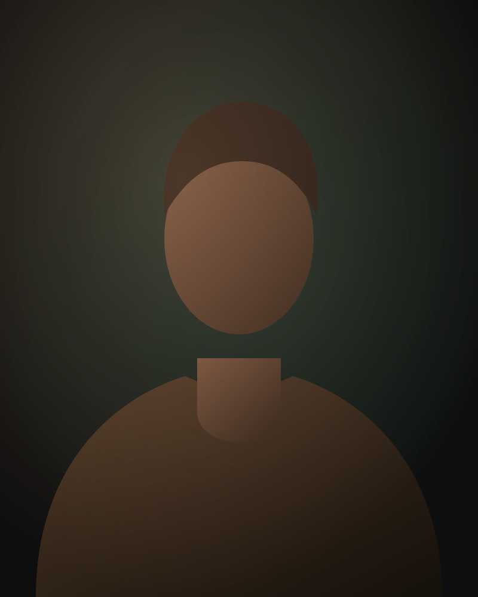

XâyĐáng tinHệ thống
Full-stack developer. Trái tim là backend.
Chào bạn, mình là Dũng — một lập trình viên đam mê xây dựng hệ thống đáng tin cậy và dễ bảo trì.
Mình thích tìm hiểu kiến trúc backend, giải các bài toán thực tế, và hiểu những quyết định kỹ thuật đằng sau một phần mềm tốt.
Luôn tò mò. Luôn cải thiện.
Mình biến những bài toán phức tạp thành phần mềm đáng tin cậy, dễ bảo trì và có ý nghĩa.
Kết hợp kỹ thuật backend, phát triển full-stack và thiết kế hệ thống để xây phần mềm chạy tốt hôm nay và phát triển được ngày mai.
Mình làm việc với
Kỹ thuật Backend
Thiết kế API và dịch vụ với hợp đồng rõ ràng, dữ liệu đầu vào được kiểm tra và hành vi ổn định khi có retry hay request đồng thời.
Xem trongThiết kế API →Checkout & Tồn kho →
Thiết kế hệ thống & Kiến trúc
Quyết định trách nhiệm nằm ở đâu, các dịch vụ giao tiếp ra sao và thiết kế chấp nhận đánh đổi nào, trước khi viết code.
Xem trongKiến trúc TeddyPet →Dịch vụ Media →
Phát triển Full Stack
Xây sản phẩm trọn vẹn từ đầu đến cuối: render phía server khi cần SEO, state phía client khi cần tương tác, và một API mà cả hai phía cùng thống nhất.
Xem trongStorefront & Admin →Dev Journal →
Database & Kỹ thuật dữ liệu
Mô hình hoá dữ liệu, chọn mức cô lập và index, giữ dữ liệu nhất quán khi nhiều tiến trình cùng ghi vào một bản ghi.
Bảo mật & Độ tin cậy
Xác thực có thể thu hồi, thao tác an toàn khi retry, và trạng thái khôi phục rõ ràng khi kết quả từ nhà cung cấp bên ngoài chưa chắc chắn.
Xem trongXác thực & Phiên đăng nhập →Thanh toán & Giao hàng →
Hệ thống thời gian thực
Truyền tin thời gian thực qua WebSocket với gửi tin idempotent, thứ tự tin nhắn ổn định và phân phối giữa nhiều replica.
Xem trongChat hỗ trợ thời gian thực →
Từ ý tưởng đến hệ thống vận hành.
Tuyển chọn các dự án và case study kỹ thuật, khám phá bài toán thực tế, quyết định kiến trúc và giải pháp thực tiễn.
Dự án

Nền tảng thương mại điện tử gồm bốn phần: API thương mại, storefront và trang quản trị, dịch vụ media và chat hỗ trợ thời gian thực.

Blog kỹ thuật dạy học với CMS riêng: lộ trình học, câu hỏi phỏng vấn và trắc nghiệm. Đã xây xong, chưa triển khai.
Case study kỹ thuật
- 01Nhất quán Checkout & Tồn khoCách TeddyPet giữ kho, mã giảm giá và đơn hàng nhất quán khi các request chạy đua, retry hoặc đến hai lần.TeddyPetIMPLEMENTED · TEST CASES IN REPO
- 02Xử lý & Khôi phục Thanh toánVNPay và GHN được tích hợp quanh callback đã xác minh, đối soát và các trạng thái khôi phục rõ ràng.TeddyPetIMPLEMENTED / TESTED (MOCKED PROVIDER)
- 03Xác thực & Quản lý PhiênAccess token ngắn hạn, refresh session xoay vòng, MFA và giới hạn lạm dụng, thiết kế để logout nghĩa là logout thật.TeddyPetIMPLEMENTED
- 04Giao tiếp Thời gian thựcDịch vụ chat khách và nhân viên tách riêng, gửi tin idempotent, thứ tự tin nhắn ổn định và replica đặt sau Nginx.TeddyPetIMPLEMENTED · COVERED BY TESTS (2026-11-15)
Còn ba case study về thiết kế API, dịch vụ media và frontend. Xem tất cả dự án →
Tò mò là bản tính. Kỹ sư là lựa chọn.
Mình đam mê tìm hiểu phần mềm vận hành thế nào bên dưới bề mặt, và biến hiểu biết đó thành những hệ thống thực tế, đáng tin cậy.


Luôn học hỏi. Luôn xây dựng.
- Tập trung vào kỹ thuật backend và phát triển full-stack.
- Được thúc đẩy bởi sự tò mò, giải quyết vấn đề và cải thiện liên tục.
- Đang khám phá kiến trúc phần mềm, thiết kế hệ thống và hệ thống đáng tin cậy.
Cách mình nghĩ. Cách mình xây.
Công nghệ thay đổi. Nguyên tắc kỹ thuật tốt vẫn ở lại.
Độ tin cậy trước tiên
Thiết kế cho cả khi có lỗi, không chỉ cho luồng suôn sẻ.
Đơn giản hơn phức tạp
Chọn giải pháp đơn giản nhất đáp ứng đúng yêu cầu thực tế.
Đánh đổi hơn xu hướng
Hiểu vì sao một giải pháp phù hợp trước khi quyết định xây nó thế nào.
Cải thiện liên tục
Học sâu, kiểm chứng giả định và tiến bộ qua trải nghiệm.
Học sâu. Xây tốt hơn.
Nơi dành cho những lập trình viên tò mò khám phá phần mềm thực sự vận hành ra sao — từ nền tảng lập trình đến thiết kế hệ thống phức tạp.
Chưa có bài viết công khai: Dev Journal đã xây xong nhưng chưa triển khai. Dưới đây là các lộ trình mình đang học và viết.
- 01Nền tảng DatabaseNền tảng lưu trữ · Index & Cấu trúc lưu trữ · Query Engine · Transaction & Đồng thời · Bền vững & Khôi phục5 chủ đềChưa xuất bản
- 02Hiệu năng & Mở rộng DatabaseHiệu năng database · Mở rộng & Database phân tán2 chủ đềChưa xuất bản
- 03Engine DatabasePostgreSQL Internals · MySQL / InnoDB Internals · MongoDB Internals3 chủ đềChưa xuất bản